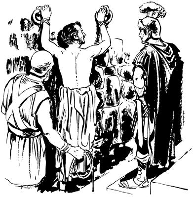

Yahudi nimiag Paulusti yubu lebogha (22:1-22)
22
1 “Yahudi nimi nangkabo, naniyabo, a'undi lolomnange nanag lolbitneomba, nari tibin nenero peleptangtop yubu ambatsinunne ka'eamlulom,” seog.2-3 Undo wene seogpa, nimi maikno tanekori nimi poneri Ibrani yubuag ambarelamsil aro ka'ebaekti, yubu koma wamek. Yubu koma wamekpa, Paulusti, “Nangkabo, a'un Yahudi nimi wamlomne saog uro na babe Yahudinge wamna. Na mangkaneekag as Tarsus Kilikia so'oag wamlange nenekoag agha mangkaneekpa, as Yerusalem ane yahiri, nubu tahi. Nunisa Musa yubu elne Gamalielti, Musa yubu kop-koptagto ao mili kuruk aneogpa, wali uro el tahi. El tahiri, a'un wamlomne Allah sembe wana wali uro ulamlom saog uro, nari babe Allah sembe ta'ap sen koma sol wali uro ulamsi. 4 “Allah sembe sol wali uro ulamsi aghana Yesusag seneragna komag wamsi. Yesusag ‘Sikne’ aro seneraglamsi komdi, nari babe Yesusti Allahag samoro yingkirop Ina pa'abaog yubu ka'ero ulamek nimi sare nelepto ya'ag olamsisi. Ya'ag olamsisiri, nenne salero kabuniap kelaboap kop aeag tolongolamsisi. 5-6 Undo ulamsinge nene memne Allah sembe pairopnang sikini nubungeap, Yahudi nimi wenehirop nang nubunang babe, sindi nari uahinge el wamangdi, ‘Sik lepla' aro lemnep. Sindi nanag, ‘Yesus yubu ka'erop nimi ebahimendi, haing sae kaupto saelbahimendi, as Yerusalem samoro payahimenba, opsukap,’ aro mome nanag pibatneek. Mome ane nanag pibatneekti, pogneekpa, palamsiri, ‘Sikinkabo Yahudi nimi as Damsyik wamang nimiag mome ane tarel phineri, Yesus yubu ka'erop nimi saelbahinun,’ aro palamsi. ‘Saelbahinun,’ aro palamsiri, as Damsyik peramag ae siro palamsiag agha heng yame saogne haing omomne imag agha nanag tingil omneog. 7 Tingil omneogpa, na so'oag malingkihiri ka'elamsiba, yubu nhon lelamogti, ‘Saulus, Saulus! Sa'a sembe Na “Seklebale,” aro ulamnelam?’ seog.
8 Wene seogpa, nari hailamsiri, ‘Nani, Anna Etneri lelamlam,’ sihiba, Eldina, ‘Na Yesus Nasaretne andi “Seklebale,” aro ulamnelamne ponekori lemna,’ seog. 9 Heng yame saogne nanag tingkaneogne nimi nanap palamubungeri babe ibekti, aoag agha yubu lilim ka'ebaek, aghana yubu nanag lelamogne sindi ka'ebaek kom. 10 Eldi yubu ka'ebaek kom aghana, nari lelamsiri, ‘Nani, sa'a agha nari uanun?’ sihiba, Eldina, ‘Sekmendi Damsyik pululam. Damsyik pimenba andi ulamlulamne Allahri seneropne ambatkenep,’ seog. 11 ‘Damsyik pimenba, ambatkenep,’ seog aghana, na haing omomne warero libango aropne nenekori haing ubaneogpa, pinep komdi nangkabo nhon palamubu nangdi sae salero Damsyik poa pineek. 12 Poa piniekpa, as Damsyik aneko nimi nhon sina Ananias. Ananias ponekona, Musa yubu sunsunum uro sol wali uro ulamogpa, Yahudi nimiri as Damsyik anekoa el wamogne sembe walinge senelamek. 13 El neneko na peramag yaogti, yubu lelamogti, ‘Saulus, nangkae. Haing kwelekae,’ seog abeneko pere na haing kwelekahiri, nari elag kembahi,” seog. 14 “Elag kembahiba, nanag eldi yubu lelamogti, ‘Allah nunisag yabori omeklamekne ponekori weplangkeldi, “Allah Eldamne seneropne walinge el taleri, Nimi Sikne yaogne poneko ipleri, Eldi yubu pamag agha lanaropne ka'ebanulul,” aro wepkel,’ aro Ananiasti ambatneog.
15 Wene aro ambatneogti, nen lelamogti, ‘An haing kwelekalamdi iplamne, ka'ebalamne Eldi ualne andi nimi ni ambarelamsululam. 16 Sa'a sembe wene nang-nangalamlam? Sekmendi Yesusag, “Malia uanonge tam orog nembanululam,” aro Yesusag yubu mololapmenba, maghag pelengkakukang,’ aro Ananiasti ambatneog,” seog.
Allahri, “Yerusalem nimiri Na yubu ka'ebaukang komba, ora asag samen pimendi, ambarelamsululam,” seogha (22:17-22).
17-18 Paulusti nen tipto ambarelamsiogti, “Na samoro Yerusalem yahiri, Allahri Aeag wamsiri, Allahag yubu mololamsi. Allahag yubu mololamsiri, haing uamna kwelekamna senenag agha Nia Mangkina Salehiropne Yesus poneko ipsi. Ipsiri tilamsiag agha Eldi nanag yubu lelamogti, ‘Na sembe yubu ambarelamsilamne ka'ebaukang komba, Yerusalem anea elem-elem lambalulam,’ seog. 19 ‘Lambalulam,’ seogpa, nari lelamsiri, ‘Nia Mangkina Saelbamsilamne, sin elwamangne, nari Allah yubu lerop aeag agha nhonag wa'ang, nhonag wa'ang ulamsiri, An Yesusag “Sikne” aro seneraglamek nimi salero kop aeag tolongolamsisiri, olamsisinge sin el wamang. 20 Stefanus poneko, An Yesusti ulamluma ipkeogti, nimi ambarelamsiog. Yesus sembe ambarelamsiogne sembe ya'ag olamekpa, olamek sumeneko, ‘Wali ya'ag olamang,’ aro na wamsiri, sae saekag sembahi.
Wene sembahiri, Stefanus olamek nimi tanekori sindi enektop ag pibekpa, nari yae piamsisi,’ aro Yesusag ambatsi.
21 Wene aro ambatsiba, Nia Mangkina Saelbamsilne ponekori nanag lelamogti, ‘Yerusalema lambamendi, pululam. Amik Nari an mog so'o weag wamang nimi Yahudi sisa kom nimiag poglangkenun,’ aro ambatneog,” aro Paulusti ambatsiog.
22 Nimi Paulusti yubu ambarelamsiogne wali ka'elamek aghana, wene aro “Nia Mangkina Saelbamsilne ponekori, ‘Mog so'o weag wamang nimi Yahudi sisa kom nimiag poglangkenun,’ aro ambatneog,” aro Paulusti ambarelamsiog abeneko, Yahudi nimiri ka'ebaekti, wana yo senelamekti, “Nimi undopne ya'ag oplulom! Undop nimi wamnep kom,” alamek.
Yin salerop nimiri “Paulus taeplam-taeplam lobukap,” aro ulameka (22:23-30)
23 Wene alamekti, Yahudi nimiri sindinge ag siriro pelengerobag kwiripto tobog ahiekti, hao lopto alikinag towalengelamek. 24 Undo unulamekpa, yin saleropne sikindo ponekori, “Nimi maikno taneko yubu sa'a sembe lelamang, eltanundi,” aro, “Paulus aeag pabumundi, taeplam-taeplam lobalulom. Taeplam-taeplam lopmundi, wana aluktop yubu ambatsilne el talulom,” aro ilipsabo ambatsiog. 25 Yin salerop nang tanekori Paulus pabiekti, “Taeplam-taeplam lobukap,” aro yan sae kiliro haing kauplamek abeneko Paulusti, yin saleropnang sikindo nhon Paulus peramag sekamogne ponekoag hailamogti, “A'undi tam wali uro kembitna koma nimi Roma nimi opsinep te?” aro haibaog.a

26 Wene aro haibaogpa, yin saleropne poneko Paulusti lebogne neneko ka'ebaogti, eldo yin saleropne ponekoag piogti, “Paulusti wene sel,” aro ambarelamogti, “Paulus pone babe Roma nimi wamlaba, sa'agha elag ualulam?” aro haibaog.
Yin saleropnangdi “Paulus taeplam-taeplam lobukap,” aro haing kaubek (ACT 22.26)
27 Wene aro haibaogpa, yin saleropne sikindo poneko Paulusag piogti, “An sik Roma nimi wamlam?” seogpa Paulusti, “Yo, ot andi leplam ane,” seog.
28 Wene seogpa, yin saleropne sikindo ponekori, “Na babe ‘Romange tanun,’ aro kal ma'al kamna alikinag Roma nimi sikini yabo tatsisi,” seogpa Paulusti, “Na kal ma'al tatsisi kom. Nani Romangeri mangkaneogpa, Romange wamna,” seog.
29 Wene seogpa, yin salerop nangdi “Taeplam-taeplam lobebeba, nu eltanepne ambatsilul,” aro haing kaubek nang tanekori babe ka'ebaekti, “Obukap kom,” aro log lelem elemag-elemag piek. Sin log lelem elemag piekpa, yin saleropne sikindo ponekori babe, “Romange agha mane agha, ‘Besi agha sorop haing agha kauplulom,’ sen,” aro log sembaog. 30 Yin saleropne sikindo ponekori, “ ‘Yahudi nimiri Paulusag ulamangne nene sa'a sembe ulamang?’ aro sik wali uro eltahane,” senelamog.
Wene senelamogti, mabogha kwelekaogne memnang Allah sembe pairopnang sikindo yaboap, Yahudi nimi sembe tam lelekto kemero kareptopnang Mahkamah Agama nangap yopsiog. Yopsiogti, poloro wimbahaiogpa, wamekag Paulus haing sae lopto enero poa sin wamekag payaek.